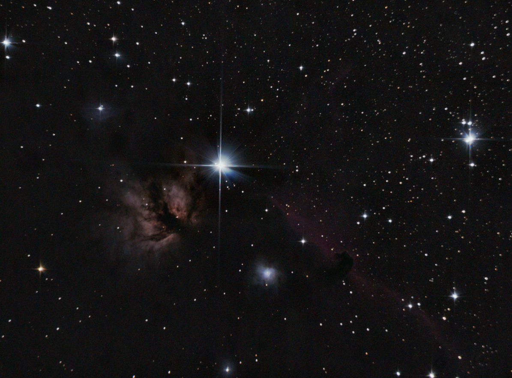
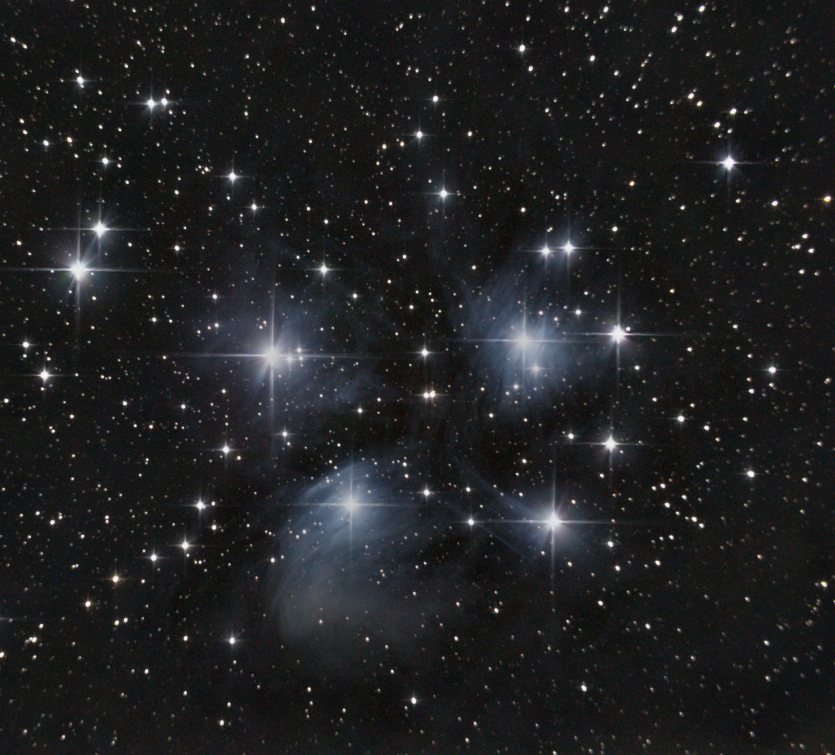
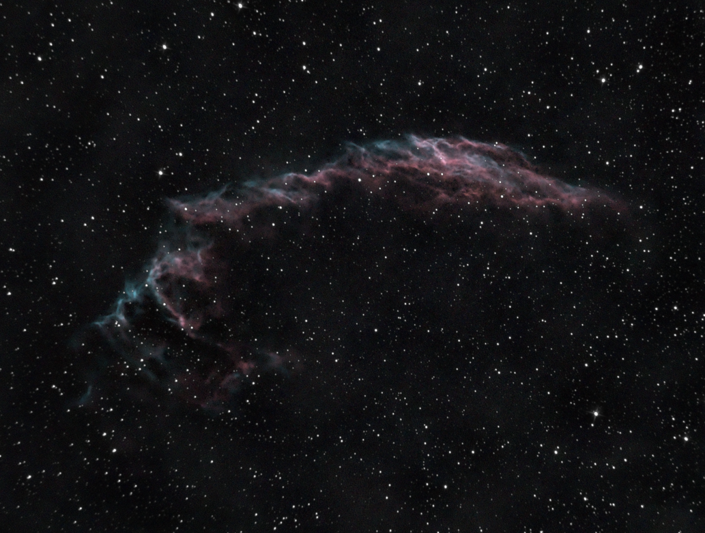
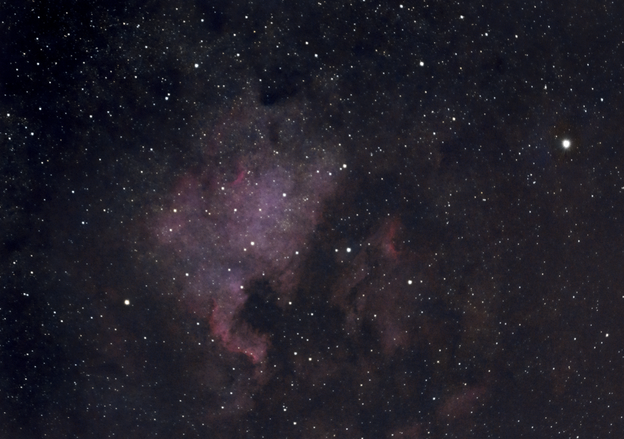

Np. taki: Canon EOS 40D
Nie musi być drogi, wystarczy żeby nie jest typu że ma wbudowany obiektyw. Choć dzisiaj większość nie ma wbudowanego.
Canony 40D używają mounta EF (mocowanie na obiektyw), więc taki T-ring będzie pasować. (Link - na stronach typu Aliexpress kupi znacznie taniej.)
Do tego żeby zdjęcia robiły sie automatycznie, istnieje coś takiego jak Interwalometr (Ja mam taki).
W nim ustawia się Delay (opóźnienie) ile po starcie ma odczekać do pierwszego zdjęcia. Potem Long ,czyli ile pojedyncze zdjęcie ma trwać. Potem Intrerval, czyli ile aparat ma poczekać pomiędzy zdjęciami. N to ile zdjęć ma sie wykonać.
Delay ja ustawiam na ~10 sekund
Long prawie zawsze na 30-60 sekund
Interval na 3 sekundy, żeby aparat zdążył zapisać zdjęcie przed zaczęciem robienia następnego.
Do mocowania aparatu, taki T-ring jak powyżej. Następnie trzeba ustawić teleskop na gwiazde Polarną. Montaż taki jak mój teleskop ma (eq-3) ma specjalną wnęke na lunetke do tego.
Nie wiem czy wasz montaż miał w zestawie tą lunetke, jak nie to jest ot coś takiego (nie firmowe kupi znacznie taniej).
Dodatkowo, jedną z najważniejszych części to prowadzenie które "śledzi" obiekt na niebie. Ja mam na jedną oś (takie) co jest minimum do astrofotografi.
Są na 2 osie, co jedynie ułatwia ustawienie teleskopu. Jeszcze są systemy GoTo, które po ustawieniu teleskopu na gwiazde Polarną, sam znajduje wybrany obiekt. Lecz taki zestaw jest znacznie droższy (Link) i nie pasuje do montażu eq-3.
Do stackowania, najlepszy darmowy program to DeepSkyStacker. (Poradnik po angielsku)
Potem kolejnym programem jest Siril. Ten program też może stackować zdjęcia, lecz ja go używam tylko do kompozycji zdjęcia (Poradnik po angielsku)
Tutaj dokładniejsze poradniki z yt: Link



